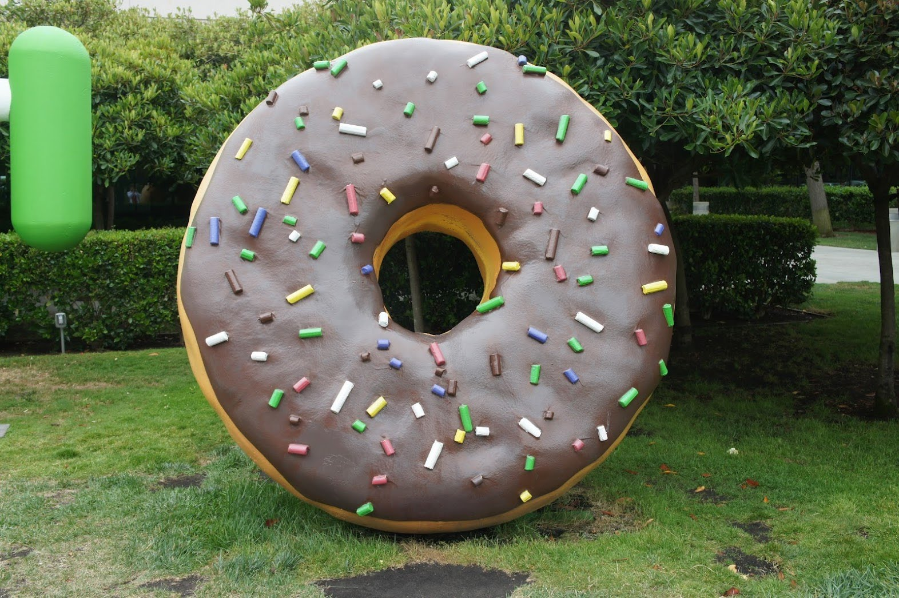

Appendix4.Androidの歴史
Android 1.0
2008年9月28日
Android 1.1
2009年2月9日
Android 1.5 Cupcake
2009年4月30日
Android 1.6 Donuts
2009年9月15日

Android 2.0/2.1 Eclair
2009年10月26日
Android 2.2 Froyo
2010年5月12日

Android 2.3 Gingerbread
2010年12月6日

Android 3.x Honeycomb
2011年2月22日

Android 4.0 Ice Cream Sandwich
2011年10月18日
Android 4.1/4.2/4.3 Jelly Bean
2012年6月27日
Android 4.4 KitKat
2013年10月31日